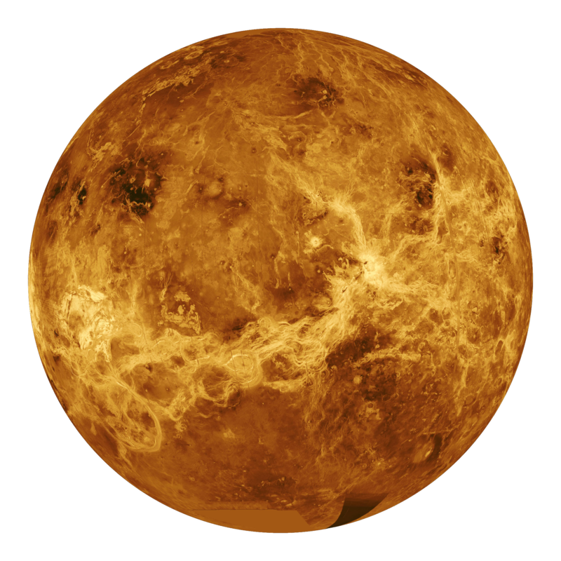
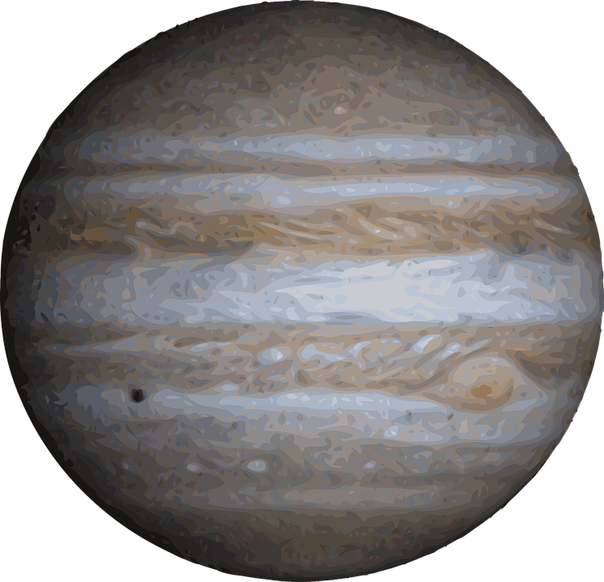
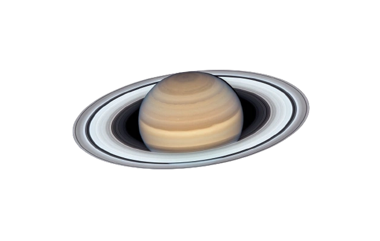
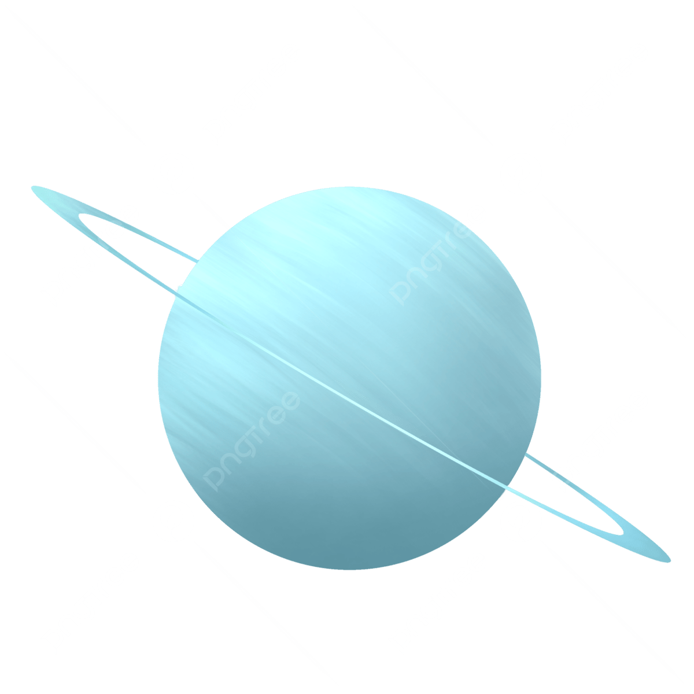
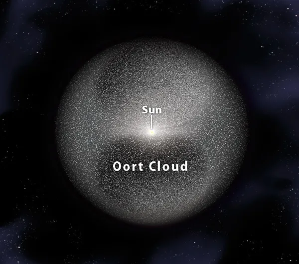

El Sol es una estrella ubicada en el centro del sistema solar y es fundamental para la vida en la Tierra. Es una esfera compuesta principalmente de hidrógeno y helio que genera energía a través de un proceso de fusión nuclear en su núcleo. Esta energía se irradia al espacio en forma de luz y calor, lo que nos proporciona la luz del día y mantiene las condiciones adecuadas para la existencia de vida en nuestro planeta. Además, el Sol ejerce una fuerte influencia gravitatoria que mantiene a todos los planetas y otros objetos en el sistema solar en órbita a su alrededor. Su estudio es esencial para comprender la astrofísica y la climatología espacial, y su importancia es innegable en nuestra vida cotidiana.
Mercurio
Mercurio es el planeta más cercano al Sol en nuestro sistema solar y es el más pequeño de los planetas rocosos. Este mundo desértico, con temperaturas extremas que van desde ardientes días hasta gélidas noches, carece de atmósfera significativa. Su superficie se caracteriza por cráteres, acantilados y llanuras, y ha sido explorada por sondas espaciales, como la misión MESSENGER de la NASA. A pesar de su proximidad al Sol, Mercurio no es el planeta más cálido, ya que su falta de atmósfera no retiene el calor. Su estudio es esencial para comprender la evolución de los planetas terrestres y los procesos geológicos que moldean los mundos rocosos en nuestro sistema solar.
Venus

Venus es el segundo planeta más cercano al Sol en nuestro sistema solar. Es conocido por su atmósfera densa y abrasadora, compuesta principalmente de dióxido de carbono, que atrapa el calor, creando un efecto invernadero extremo y convirtiendo su superficie en un lugar extremadamente caliente. Venus es similar en tamaño y composición a la Tierra, pero su atmósfera tóxica y su temperatura infernal lo hacen inhóspito para la vida tal como la conocemos. Aunque se le llama a veces el "planeta gemelo" de la Tierra, es un mundo muy diferente y ha sido objeto de estudio para comprender los efectos del cambio climático y la evolución planetaria.
La Tierra
La Tierra es el tercer planeta desde el Sol en nuestro sistema solar y es el único mundo conocido que alberga vida. Este planeta azul es único debido a su atmósfera que contiene oxígeno y agua en estado líquido, lo que lo hace propicio para la vida tal como la conocemos. La Tierra tiene una asombrosa diversidad de paisajes, climas y ecosistemas, desde montañas majestuosas hasta vastos océanos. Además, su núcleo metálico genera un campo magnético que protege la vida de la radiación solar dañina. La Tierra es el hogar de millones de especies, incluyendo a la humanidad, y su estudio es esencial para comprender la geología, el clima y la ecología de nuestro planeta. Cuidar y preservar este precioso hogar es una responsabilidad de todos.
Marte
Marte es el cuarto planeta en el sistema solar y se le conoce como el "Planeta Rojo" debido a su característico color. Es un mundo rocoso con una delgada atmósfera que consiste principalmente en dióxido de carbono. Marte ha sido objeto de un intenso interés científico debido a su posible historia de agua líquida en la superficie, lo que sugiere la posibilidad de vida en el pasado. Las misiones espaciales, como el rover Perseverance de la NASA, han explorado su terreno, ayudándonos a comprender mejor la geología y la posibilidad de habitabilidad en este planeta. Marte es un objetivo clave en la búsqueda de vida fuera de la Tierra y en la futura exploración humana del espacio.
Jupiter

Júpiter es el quinto planeta en el sistema solar y es conocido por ser un gigante gaseoso. Es el planeta más grande y masivo de todos, compuesto principalmente de hidrógeno y helio. Su característica más notable es la Gran Mancha Roja, una gigantesca tormenta que ha estado activa durante siglos. Júpiter también tiene un sistema de anillos y múltiples lunas, incluyendo Ganímedes, la luna más grande de nuestro sistema solar. Su estudio es esencial para comprender la formación de los planetas y la dinámica de los gigantes gaseosos. Júpiter juega un papel importante en la protección de la Tierra, ya que su gravedad desvía asteroides y cometas que podrían colisionar con nuestro planeta.
Saturno

Saturno es el sexto planeta en el sistema solar y se destaca por sus impresionantes anillos. Es un gigante gaseoso compuesto principalmente de hidrógeno y helio, similar a Júpiter. Sus anillos, compuestos de partículas de hielo y roca, le confieren una apariencia única. Saturno también tiene un sistema de lunas, siendo Titán la más grande y una de las pocas lunas en el sistema solar con una atmósfera densa. La belleza de sus anillos y su compleja estructura hacen de Saturno un objeto de fascinación para científicos y entusiastas del espacio. Su estudio ha proporcionado información valiosa sobre la formación y evolución de los planetas en nuestro sistema solar.
Urano

Urano es el séptimo planeta en nuestro sistema solar y es conocido por su inclinación extrema en el eje, lo que le da una apariencia "tumbada" en su órbita. Es un gigante gaseoso compuesto principalmente de hidrógeno y helio, similar a Júpiter y Saturno. Urano tiene un sistema de anillos y numerosas lunas, siendo Titania y Oberón las más grandes. Su característica más intrigante es su color azul verdoso, debido a la presencia de metano en su atmósfera. A pesar de su singularidad, Urano es uno de los planetas menos estudiados debido a su distancia y dificultad para observarlo. Su estudio es esencial para comprender la diversidad y complejidad de los mundos en el sistema solar.
Neptuno
Neptuno es el octavo y último planeta en nuestro sistema solar. Es un gigante gaseoso, principalmente compuesto de hidrógeno y helio, similar a Júpiter y Saturno. Su característica más distintiva es su color azul intenso debido a la presencia de metano en su atmósfera. Neptuno tiene anillos y un sistema de lunas, siendo Tritón la más grande y peculiar, ya que orbita en sentido contrario a la rotación del planeta. Este mundo distante es conocido por sus fuertes vientos y tormentas en su atmósfera. Aunque es el planeta más lejano y menos explorado, su estudio es esencial para comprender la diversidad de planetas en nuestro sistema solar y más allá.
Plutón (Planetoide)
Plutón es un planetoide o un "planeta enano" ubicado en el sistema solar, más allá de Neptuno. Anteriormente, Plutón fue considerado el noveno planeta, pero en 2006 fue reclasificado debido a su tamaño y órbita. Es mucho más pequeño que los planetas tradicionales y tiene una órbita excéntrica y con inclinación en el cinturón de Kuiper, una región llena de objetos helados. Plutón es conocido por su luna, Caronte, y su peculiar geología que incluye montañas y una atmósfera tenue. Aunque Plutón no es un planeta en el sentido clásico, sigue siendo un objeto de gran interés y estudio en la astronomía.
Oort Cloud

La Nube de Oort es una estructura teórica en el sistema solar, ubicada a una distancia extrema de alrededor de 2 años luz del Sol. Se presume que consiste en una vasta colección de cometas y objetos helados, lo cual incluye protocometas. Esta nube es esencialmente la frontera exterior del sistema solar y se cree que alberga objetos que datan de la formación inicial del sistema solar.
La Nube de Oort se divide en dos regiones, la Nube Interior de Oort y la Nube Exterior de Oort. La Nube Exterior de Oort es la más lejana y menos comprendida, ya que se encuentra a distancias extremas del Sol y es difícil de observar directamente. Los cometas que se originan en la Nube de Oort ocasionalmente se desplazan hacia el interior del sistema solar debido a las perturbaciones gravitacionales de estrellas cercanas u otros objetos, convirtiéndose en cometas de largo período que pueden ser visibles desde la Tierra.
El estudio de la Nube de Oort es esencial para comprender la dinámica y evolución del sistema solar, así como el origen y la naturaleza de los cometas que ocasionalmente visitan nuestro vecindario cósmico. Sin embargo, debido a su lejanía y falta de observaciones directas, gran parte de nuestra comprensión de la Nube de Oort sigue siendo especulativa y se basa en modelos teóricos.


.gif)